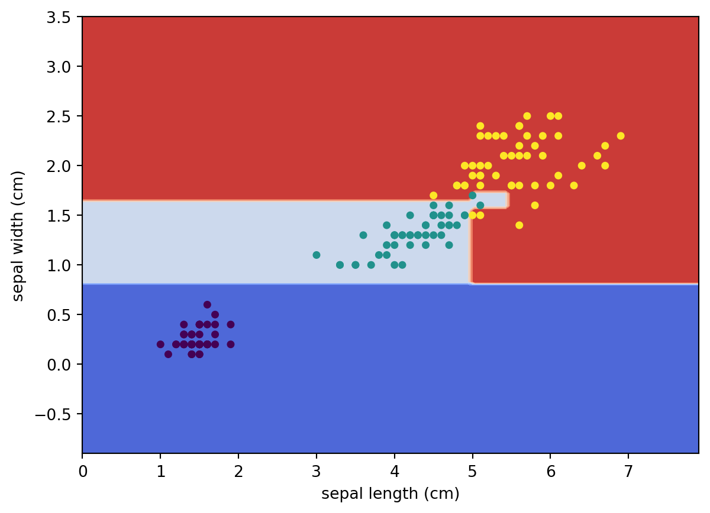
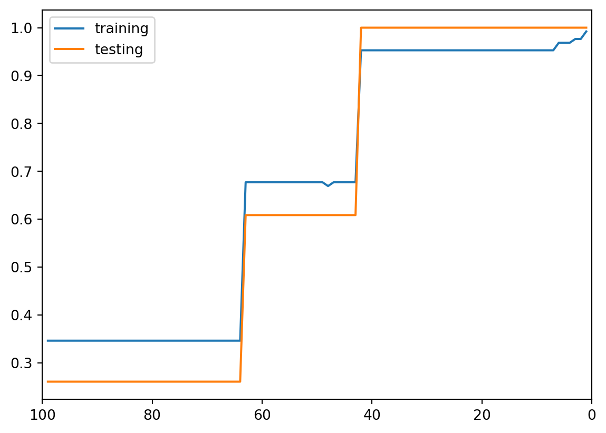
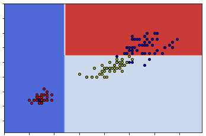
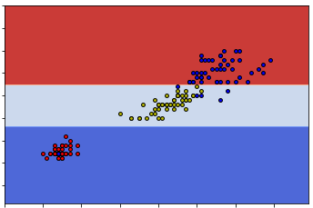

We are going to use the Decision Tree model to study the iris dataset. This dataset has already studied previously using k-NN. Again we will only use the first two features for visualization purpose.
Initial setup
Since the dataset will be splitted, we will put X and y together as a single variable S. In this case when we split the dataset by selecting rows, the features and the labels are still paired correctly.
We also print the labels and the feature names for our convenience.
from sklearn.datasets import load_irisimport numpy as npiris = load_iris()X = iris.data[:, 2:]y = iris.targety = y.reshape((y.shape[0],1))S = np.concatenate([X,y], axis=1)print(iris.target_names)print(iris.feature_names)
Now we would like to use the decision tree package provided by sklearn. The process is straightforward. The parameter random_state=40 will be discussed {ref}later<note-random_state>, and it is not necessary in most cases.
from sklearn.tree import DecisionTreeClassifierclf = DecisionTreeClassifier(random_state=40, min_samples_split=2)clf.fit(X, y)
DecisionTreeClassifier(random_state=40)
In a Jupyter environment, please rerun this cell to show the HTML representation or trust the notebook. On GitHub, the HTML representation is unable to render, please try loading this page with nbviewer.org.
DecisionTreeClassifier(random_state=40)
sklearn provide a way to automatically generate the tree view of the decision tree. The code is as follows.
Similar to k-NN, we may use sklearn.inspection.DecisionBoundaryDisplay to visualize the decision boundary of this decision tree.
from sklearn.inspection import DecisionBoundaryDisplayDecisionBoundaryDisplay.from_estimator( clf, X, cmap='coolwarm', response_method="predict", xlabel=iris.feature_names[0], ylabel=iris.feature_names[1],)# Plot the training pointsplt.scatter(X[:, 0], X[:, 1], c=y, s=15)

Tuning hyperparameters
Building a decision tree is the same as splitting the training dataset. If we are alllowed to keep splitting it, it is possible to get to a case that each end node is pure: the Gini impurity is 0. This means two things:
The tree learns too many (unnecessary) detailed info from the training set which might not be applied to the test set. This is called overfitting. We should prevent a model from overfitting.
We could use the number of split to indicate the progress of the learning.
In other words, the finer the splits are, the further the learning is. We need to consider some early stop conditions to prevent the model from overfitting.
Some possible early stop conditions:
max_depth: The max depth of the tree. The default is none which means no limits.
min_samples_split: The minimum number of samples required to split an internal node. The default is 2 which means that we will split a node with as few as 2 elements if needed.
min_samples_leaf: The minimum number of samples required to be at a leaf node. The default is 1 which means that we will still split the node even if one subset only contains 1 element.
If we don’t set them (which means that we use the default setting), the dataset will be split untill all subsets are pure.
Example 1 (ALMOST all end nodes are pure) In this example, we let the tree grow as further as possible. It only stops when (almost) all end nodes are pure, even if the end nodes only contain ONE element (like #6 and #11).
All the data points in this node has the same feature while their labels are different. They cannot be split further purely based on features.
Therefore we could treat these hyperparameters as an indicator about how far the dataset is split. The further the dataset is split, the further the learning goes, the more details are learned. Since we don’t want the model to be overfitting, we don’t want to split the dataset that far. In this case, we could use the learning curve to help us make the decision.
In this example, let us choose min_samples_leaf as the indicator. When min_samples_leaf is big, the learning just starts. When min_samples_leaf=1, we reach the far most side of learning. We will see how the training and testing accuracy changes along the learning process.
from sklearn.model_selection import train_test_splitimport matplotlib.pyplot as pltX_train, X_test, y_train, y_test = train_test_split(X, y, test_size=0.15, random_state=42)num_leaf =list(range(1, 100))train_acc = []test_acc = []for i in num_leaf: clf = DecisionTreeClassifier(random_state=42, min_samples_leaf=i) clf.fit(X_train, y_train) train_acc.append(clf.score(X_train, y_train)) test_acc.append(clf.score(X_test, y_test))plt.plot(num_leaf, train_acc, label='training')plt.plot(num_leaf, test_acc, label='testing')plt.gca().set_xlim((100, 0))plt.legend()

From this plot, the accuracy has a big jump at min_sample_leaf=41. So we could choose this to be our hyperparameter.
Apply CART manually (optional)
The manual sample code is optional.
We apply split to the dataset S.
from assests.codes.dt import gini, split, countlabelsr = split(S)if r['split'] isTrue: Gl, Gr = r['sets']print(r['pair'])print('The left subset\'s Gini impurity is {g:.2f},'.format(g=gini(Gl)),' and its label counts is {d:}'.format(d=countlabels(Gl)))print('The right subset\'s Gini impurity is {g:.2f},'.format(g=gini(Gr)),' and its label counts is {d}'.format(d=countlabels(Gr)))
(0, 1.9)
The left subset's Gini impurity is 0.00, and its label counts is {0.0: 50}
The right subset's Gini impurity is 0.50, and its label counts is {1.0: 50, 2.0: 50}
The results shows that S is splitted into two subsets based on the 0-th feature and the split value is 1.9.
The left subset is already pure since its Gini impurity is 0. All elements in the left subset is label 0 (which is setosa). The right one is mixed since its Gini impurity is 0.5. Therefore we need to apply split again to the right subset.
r = split(Gr)if r['split'] isTrue: Grl, Grr = r['sets']print(r['pair'])print('The left subset\'s Gini impurity is {g:.2f},'.format(g=gini(Grl)),' and its label counts is {d:}'.format(d=countlabels(Grl)))print('The right subset\'s Gini impurity is {g:.2f},'.format(g=gini(Grr)),' and its label counts is {d}'.format(d=countlabels(Grr)))
(1, 1.7)
The left subset's Gini impurity is 0.17, and its label counts is {1.0: 49, 2.0: 5}
The right subset's Gini impurity is 0.04, and its label counts is {2.0: 45, 1.0: 1}
This time the subset is splitted into two more subsets based on the 1-st feature and the split value is 1.7. The total Gini impurity is minimized using this split.
The decision we created so far can be described as follows:
Check the first feature sepal length (cm) to see whether it is smaller or equal to 1.9.
If it is, classify it as lable 0 which is setosa.
If not, continue to the next stage.
Check the second feature sepal width (cm) to see whether it is smaller or equal to 1.7.
If it is, classify it as label 1 which is versicolor.
If not, classify it as label 2 which is virginica.
Analyze the differences between the two methods
The tree generated by sklearn and the tree we got manually is a little bit different. Let us explore the differences here.
To make it easier to split the set, we could convert the numpy.ndarray to pandas.DataFrame.
import pandas as pddf = pd.DataFrame(X)df.head()
0
1
0
1.4
0.2
1
1.4
0.2
2
1.3
0.2
3
1.5
0.2
4
1.4
0.2
Now based on our tree, we would like to get all data points that the first feature (which is marked as 0) is smaller or equal to 1.9. We save it as df1. Similarly based on the tree gotten from sklearn, we would like to get all data points taht the second feature (which is marked as 1) is smaller or equal to 0.8 and save it to df2.
df1 = df[df[0]<=1.9]df2 = df[df[1]<=0.8]
Then we would like to compare these two dataframes. What we want is to see whether they are the same regardless the order. One way to do this is to sort the two dataframes and then compare them directly.
To sort the dataframe we use the method DataFrame.sort_values. The details can be found here. Note that after sort_values we apply reset_index to reset the index just in case the index is massed by the sort operation.
Then we use DataFrame.equals to check whether they are the same.
So these two sets are really the same. The reason this happens can be seen from the following two graphs.

From our code

From sklearn
So you can see that either way can give us the same classification. This means that given one dataset the construction of the decision tree might be random at some points.
note-random_state
Since the split is random, when using sklearn.DecisionTreeClassifier to construct decision trees, sometimes we might get the same tree as what we get from our naive codes.
To illustrate this phenomenaon I need to set the random state in case it will generate the same tree as ours when I need it to generate a different tree. The parameter random_state=40 mentioned before is for this purpose.
Another difference is the split value of the second branch. In our case it is 1.7 and in sklearn case it is 1.75. So after we get the right subset from the first split (which is called dfr), we would split it into two sets based on whether the second feature is above or below 1.7.
Now you can see where the split number comes from. In our code, when we found a split, we will directly use that number as the cut. In this case it is 1.7.
In sklearn, when it finds a split, the algorithm will go for the middle of the gap as the cut. In this case it is (1.7+1.8)/2=1.75.
Pruning
Other than tuning hyperparameters, we also want to prune our tree in order to reduce overfitting further. The pruning algorithm introduced together with CART is called Minimal-Cost-Complexity Pruning (MCCP).
The idea is to use the cost-complexity measure to replace Gini impurity to grow the tree. The cost-complexity measure is gotten by adding the total number of end nodes with the coefficent ccp_alpha to the Gini impurity. The parameter ccp_alpha>=0 is known as the complexity parameter, and it can help the tree to self-balance the number of end nodes and the Gini impurity.
In sklearn, we use cost_complexity_pruning_path to help us find the effective alphas and the corresponding impurities.
The list ccp_alphas contains all important ccp_alphas. We could train a model for each of them. We could use the argument ccp_alpha to control the value when initialize the model. After we train all these tree models for each effective ccp_alpha, we evaluate the model and record the results.
clfs = []for ccp_alpha in ccp_alphas: clf = DecisionTreeClassifier(random_state=42, ccp_alpha=ccp_alpha) clf.fit(X_train, y_train) clfs.append(clf)node_counts = [clf.tree_.node_count for clf in clfs]depth = [clf.tree_.max_depth for clf in clfs]train_acc = [clf.score(X_train, y_train) for clf in clfs]test_acc = [clf.score(X_test, y_test) for clf in clfs]